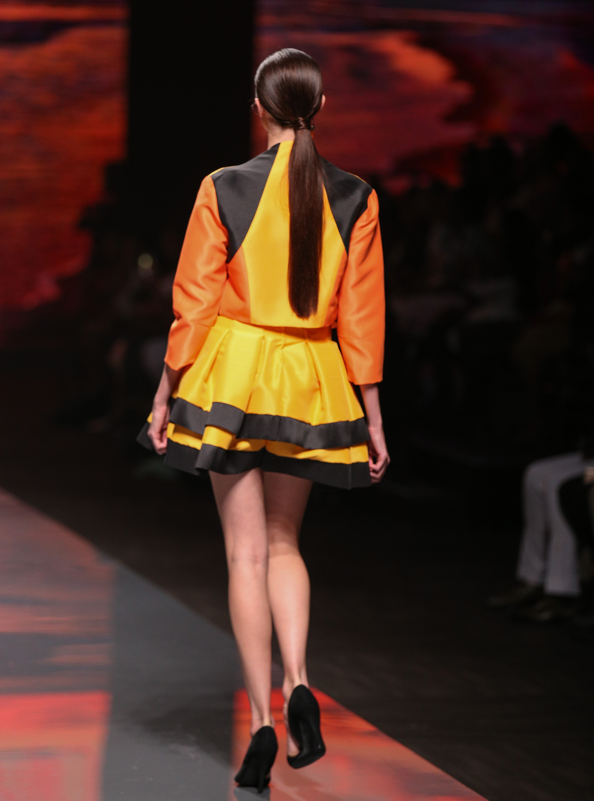

Our Story
Our Story
Durban based ladies wear designer, Pinky Dlamini is the owner and creative director of our brand Modesta.
Modesta Creation and Designing cc is a young black owned company operating from KwaNdengezi Township in Durban.
She was inspired to join the fashion industry when she became fascinated with the process of taking an idea and bringing it to life form
of sketch before translating it into a completed garment through the use of fabrics, trimmings and technical skill.
She obtained a National Diploma in Fashion obtained from Durban University of Technology.
Her vision is to tell our African stories to the world through our fashion craftsmanship of garments and also be the best supplier of
African inspired everyday and occassional women's wear. She is captivated by layer of fabrics, African and tribal paints, bead work
and embellishments which help provide the colourful, afrocentric palette that is evident in her collection.

Our Journey
As an emerging and growing brand we believe that through fashion shows,trade shows and exhibitions our brand, Modesta can grow.
We have been participants at Darkchild Brandz Fashion and Jewellery Extravaganza in 2009-2010,KwaNdengezi Sports, Arts and Culture
Youth Festival 2010 (community event),Interpret Durban Design Contest 2011,
Helped Grade 10 Arts and Culture class of Margot Fontaine Secondary School with their Fashion Story Board Project (in Klaarwater,
Mariannhill), Durban Business Fair 2011 – 2012,
Cape Town Design Indaba 2013,
KwaZulu-Natal Art and Business Exhibition, in Moscow Russia 2013,
Durban Fashion Fair 2013 – 2014,
DFF Fashion Development Program Intern 2014,
International Design Internship Program, Milan Italy 2014,
Taking It Back to Ekasi 2015. (Modesta initiative youth & community Arts event – giving back),
Essence Festival Durban 2016,
Pure London, London United Kingdom 2017,
Torino Fashion Week in Italy 2019,
Durban Fashion Fair 2018 - 2019. This is where we get a chance to meet new and possible clients, network and make contacts.
Most importantly we get to see and learn what other brands in our own sector and businesses in other sectors do and how we can
improve our work as a whole.

Our Mission
To create full time jobs for women, youth and people with disabilities and reduce the level of unemployment.
To empower women, youth and people with disabilities through community projects.
To grow the brand and the company to its greater heights.
Passion for fashion, diverse cultures and traditions of our beautiful multicultural country are the driving forces behind our brand
Modesta.